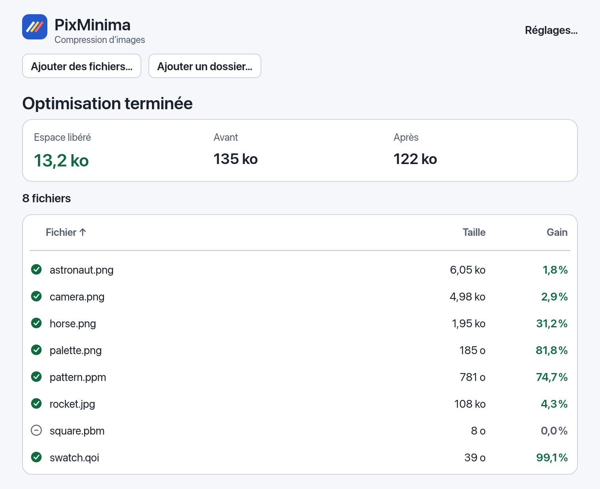

Choisir la compression
Le mode Maximum essaie davantage d’encodages. Pour autoriser une modification de l’image, activez la compression avec perte dans les réglages. Cette option est désactivée au premier lancement.
Glissez des images ou un dossier. PixMinima cherche un fichier plus léger, le vérifie et remplace l’original au même endroit. La compression est sans perte par défaut.
Apple Silicon · macOS 27 Golden Gate ou ultérieur
L’application Mac est disponible en français, en anglais et en espagnol.

Le mode Maximum essaie davantage d’encodages. Pour autoriser une modification de l’image, activez la compression avec perte dans les réglages. Cette option est désactivée au premier lancement.
Taille indique le poids du fichier final. Gain donne le pourcentage économisé. Cliquez sur une colonne pour classer les fichiers du lot.
Le remplacement se fait sans sauvegarde. Les réglages permettent aussi de créer des copies ou de conserver un original restaurable. Le traitement s’effectue sur le Mac.
PixMinima vérifie automatiquement les mises à jour. Vous pouvez aussi lancer la recherche dans les réglages et choisir quand redémarrer.